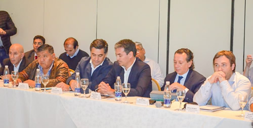

Real Chubut - Agencia de Noticias


Cerdá: "Estamos trabajando para poner en valor y potenciar toda la actividad productiva de nuestra Provincia"

Lo señaló el Ministro de Hidrocarburos del Chubut tras participar junto a funcionarios del Gobierno Provincial, Nacional, referentes gremiales y empresariales del Primer Plenario de la Mesa del Golfo San Jorge.
Con una amplia participación de referentes gremiales, empresariales y trabajadores de la región, se desarrolló este jueves en Comodoro Rivadavia el Primer Plenario de la Mesa del Golfo San Jorge. El encuentro estuvo presidido por los ministros de Hidrocarburos del Chubut, Martín Cerdá y de la Producción, Hernán Alonso, y contó con la presencia de una comitiva de funcionarios nacionales encabezada por el ministro de Producción y Trabajo de la Nación, Dante Sica.
"El Gobernador Arcioni está haciendo un gran esfuerzo para que la provincia pueda explotar todas las riquezas que tiene. Pero es fundamental tener el apoyo del Estado Nacional porque si no hay política económica o financiera, no podemos crecer", señaló Cerdá luego de una intensa jornada de trabajo que contempló el abordaje distintas problemáticas vinculadas con la actividad productiva de Chubut.
De la Mesa participaron los secretarios generales del Sindicato del Petróleo y Gas Privado de la Provincia, Jorge Ávila; y de Santa Cruz, Claudio Vidal; y el de Petroleros Jerárquicos de la Patagonia Austral, José Llugdar. También estuvieron presentes el diputado nacional, Gustavo Menna; el intendente de Sarmiento, Ricardo Britapaja; el ministro de Turismo, Néstor García; el subsecretario de Industria, Leandro Cavaco; y el administrador general de Recursos Hídricos del Instituto Provincial del Agua, Gerardo Bulacios.
Balance positivo
Al cierre del encuentro, Cerdá indicó que "me voy con un balance positivo por los temas planteados en la primera mesa" y agregó que "hoy tuvimos ciertos avances como la posibilidad de ver qué tipo de ayuda tenemos de parte de Nación para llevar adelante proyectos de inversión en áreas marginales. Está el compromiso de Nación de que van a evaluar cómo pueden colaborar ellos en algunos proyectos puntuales".
El ministro de Hidrocarburos reveló que otra cuestión planteada a funcionarios del Gobierno Nacional "fue el de los 30 kilómetros de gasoducto que nos faltan en unir el gasoducto cordillerano con el patagónico y eso sería también importante para fortalecer y darle potencial a yacimientos gasíferos que tenemos en la provincia que hoy están parados por no contar con el caño por dónde sacar el gas".
En esa línea, sostuvo que "vamos a tener reuniones con el sector privado en Buenos Aires para ver si en un esfuerzo nacional, provincial y privado podemos empezar a trabajar en el proyecto y ver que se transforme en una política a largo plazo para poder tenerlo finalizado lo antes posible".
En otro orden, Cerdá manifestó que "más allá del petróleo se hicieron planteos importantes respecto al sector productivo y sector pyme". El funcionario precisó que "somos una provincia motorizada por la industria del hidrocarburo pero no hay que olvidarse que la industria es soportada por un montón de sectores pymes. Y que hayan participado la verdad es que es muy positivo".
El Ministro destacó que desde el Gobierno de la Provincia se continuará trabajando para poner en valor a nuestros productos y potenciar toda la actividad productiva que tiene nuestra provincia".
Diversidad productiva de Chubut
En tanto, el ministro de la Producción, Hernán Alonso, explicó que la Mesa concretada esta tarde "tuvo una apertura sumamente interesante e inteligente de no sólo centrar la actividad del Golfo en la actividad petrolera sino en toda la diversidad productiva que tiene Chubut".
Reveló que se abordaron "los ejes que estaban planteados, con bastante actividad respecto al eje ovino, tanto en la producción de carne como la de lana, y en la fruticultura y vitivinicultura", así como sobre aspectos de conectividad y logística".
Alonso manifestó que la reunión fue "positiva" y agregó que "pudimos plantear la posición de la provincia y la situación que viven los sectores productivos en Chubut, y también hacer bastante hincapié en las dificultades que se están atravesando por las medidas nacionales que están impidiendo un poco el desarrollo".
El funcionario valoró "la apertura del Golfo a la actividad productiva en general", y en ese sentido celebró que "las empresas petroleras pudieran escuchar también de parte nuestra, cuáles son los otros ejes de desarrollo y de trabajo que encara el Gobierno de la Provincia".
--
Subsecretaría de Información Pública del Chubut
PUBLICIDAD